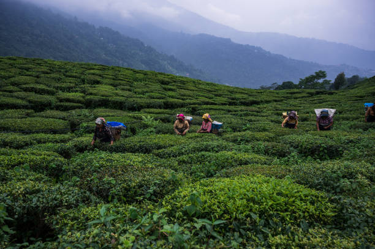
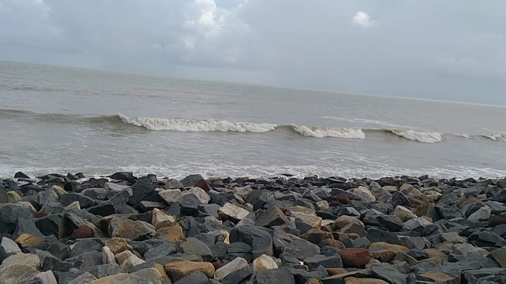
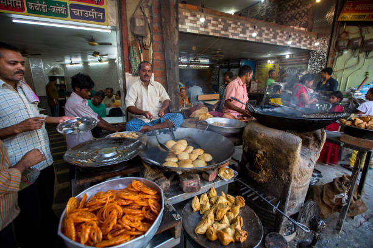

Hello! I'm Sahil Bhowmick, a Computer Science graduate with a B.Tech in
Computer Science and Engineering. Alongside my enthusiasm for web
development and technology, I also have a great passion for traveling
and trying out different foods. This blog is a showcase of my travels,
from the scenic beauty of Darjeeling to the relaxing beaches of Digha,
and my experiences with the exciting street food of Kolkata that I
discovered during my college years. Through these posts, I aim to share
my adventures, provide useful tips, and hopefully inspire you to explore
new places and tastes. I hope you enjoy reading about my journeys as
much as I enjoyed experiencing them!
Darjeeling: The Queen of the Hills
A stunning journey through the tea gardens and scenic views of
Darjeeling.
In 2019, I went to Darjeeling with my family. It was a great break
from the city. We were amazed by the Himalayan views and enjoyed the
peaceful environment. Highlights included exploring tea gardens and
breathing the fresh mountain air.
Darjeeling, known as the "Queen of the Hills," offers amazing views of
the Himalayas. My visit included walks through beautiful tea gardens,
enjoying local food, and experiencing the unique culture. Here are
some highlights:

Highlights:
Walking through the lovely tea gardens and learning how tea is made.
Visiting the historic Darjeeling Himalayan Railway, a UNESCO World
Heritage site.
Exploring local markets and trying traditional Tibetan and Nepali
food.
Watching the sunrise from Tiger Hill, with views of the Kanchenjunga
range.
Enjoying the peace of the Japanese Peace Pagoda and reflecting at
the Buddhist monastery.
Darjeeling's Beautiful Sky and Gardens.
Digha: Beach Bliss and Coastal Wonders
Enjoying the peaceful beaches and local seafood at Digha.
This March, I went to Digha with my friends. It was a fun and relaxing
trip. The calm beaches and fresh seafood made it special. We also
captured some beautiful sunset moments that added to the charm of the
beach.
My time in Digha was wonderful with beach walks, playing in the water,
and eating fresh seafood from local stalls. The sunsets were stunning.
Here’s what made my trip memorable:

Highlights:
Relaxing on the beach and swimming in the calm Bay of Bengal.
Trying delicious seafood dishes like crab curry and fried fish from
beachside shacks.
Taking a boat ride to explore nearby coastal areas and mangroves.
Enjoying the beautiful sunsets from the Digha beach promenade.
Visiting the Marine Aquarium and Regional Centre to learn about
marine life.
Digha Beach Waves and Sunset.
Kolkata: Exploring the Vibrant Street Foods
A tasty adventure through Kolkata's street foods.
During my college years in Kolkata from 2018 to 2022, I explored the
city's rich street food scene. From late-night food hunts to finding
hidden food spots, each experience was an adventure. I loved trying
different dishes and sweets, making it a highlight of my college life.
Kolkata's street food is full of flavors and textures, showing the
city's rich food traditions. From spicy chaats to sweet treats like
rasgulla, each dish tells a story of Kolkata's lively food culture.
Here’s what I enjoyed:

Highlights:
Trying popular dishes like puchka (pani puri) and kathi rolls from
street vendors.
Vikram’s Kachori and Chaat: On College Street, this
place is known for spicy kachoris and chaats. I enjoyed the crispy
kachoris with spicy tamarind chutney. It was a hit with my friends
and me. The lively atmosphere made it even better.
Kwality Wall’s: This famous spot on Park Street is
known for its tasty rolls. The mutton kathi roll, with juicy meat in
a soft paratha, was a favorite during my late-night food runs.
Paramount: Famous for traditional Bengali sweets,
this place on Bentinck Street is known for its delicious rasgullas
and sandesh. I loved the rasgullas, which were a perfect end to many
of my meals.
New Alambazar’s Fish Curry: This street food stall
near New Alambazar is known for its tasty fish curry and rice. The
rich, flavorful curry and fresh fish made it a memorable meal.
Arsalan: Although more of a restaurant, its biryani
is famous. The spicy and fragrant biryani with tender chicken made
it one of my favorite places for a hearty meal.
About Me
Hi, I'm Sahil Bhowmick. I have a deep interest in web development and
technology. Beyond my professional pursuits, I am passionate about
traveling and discovering new cuisines. This blog serves as a platform
to share my personal experiences and insights from my journeys.
My goal is to inspire curiosity and encourage others to explore and
enjoy the world around them. Whether you’re looking for travel
inspiration, culinary tips, or just an interesting read, I hope you find
something valuable here.
Stay tuned for future updates as I continue to explore new destinations,
try out new recipes, and delve into the latest trends in web
development. Your feedback is always appreciated, and I look forward to
sharing more adventures with you.